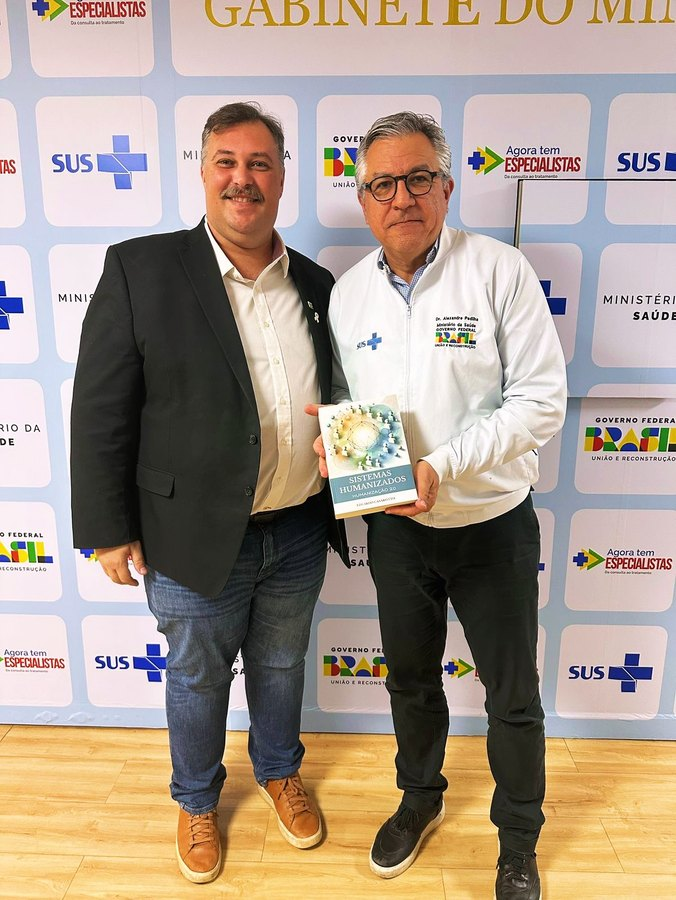

Sistemas Humanizados · Humanização 2.0
O futuro das organizações já começou a ser redesenhado.
Temos que parar de tentar fazer os seres humanos se adaptarem melhor às empresas.
E começar a fazer as empresas serem compatíveis com os seres humanos.
Eduardo Casarotto
Essa direção aparece em normas sobre organizações centradas no ser humano e em orientações internacionais para o futuro do trabalho. Sistemas Humanizados - Humanização 2.0 é a proposta de Eduardo Casarotto para levar esse princípio às estruturas, aos processos e à gestão das organizações.
- O problema
Parte do sofrimento no trabalho nasce das próprias regras da organização.
- A virada
Em vez de adaptar pessoas, tornar organizações compatíveis com elas.
- O mundo
ISO, OIT e OMS já discutem o trabalho centrado no ser humano.
- A proposta
Sistemas Humanizados: a arquitetura de Eduardo Casarotto para essa mudança.
- Sua profissão
RH, saúde, SST e liderança ganham repertório para participar dela.
Leia o argumento completo
- Empresas continuam exigindo resiliência e adaptação dos profissionais mesmo quando parte do sofrimento é produzida pelas próprias condições de trabalho.
- Se as regras, os processos e a gestão contribuem para o problema, melhorar apenas o comportamento individual não resolve a causa.
- Temos que parar de tentar fazer os seres humanos se adaptarem melhor às empresas.
- E começar a fazer as empresas serem compatíveis com os seres humanos.
- Essa direção já aparece em referências internacionais: a ISO trata de organizações centradas no ser humano, a OIT defende um futuro do trabalho centrado nas pessoas e a OMS inclui intervenções organizacionais em suas recomendações de saúde mental no trabalho.
- Sistemas Humanizados - Humanização 2.0 é a proposta desenvolvida por Eduardo Casarotto para compreender o funcionamento humano e orientar a transformação de estruturas, políticas, processos e gestão.
- Para profissionais de RH, saúde, segurança do trabalho e liderança, estudar esse campo amplia o repertório para participar da construção das organizações de amanhã.
Por que mudar o sistema, e não só a pessoa?
Palestras, terapia e programas de desenvolvimento podem ajudar pessoas. Mas, se a organização mantém regras e processos que contribuem para o sofrimento, atuar só sobre o indivíduo deixa parte do problema intacta. O trabalho precisa ser analisado também como sistema: cargos, sobrecarga, fluxos, critérios, governança e decisões.
Uma empresa pode ter profissionais humanizados e continuar funcionando de maneira desumanizante.
Ninguém precisa de teoria nova para saber que meta impossível faz mal, ou que gritar com funcionário é errado. Isso já é reconhecido como problema. O trabalho difícil é enxergar o que agride e é considerado normal:
Promover o melhor técnico a gestor
Ele era excelente no que fazia. O cargo novo pede outra coisa, e ninguém perguntou se aquilo combinava com ele. A empresa perde um bom técnico e ganha um gestor infeliz. E todo mundo chama isso de reconhecimento.
O atendimento excelente que o cliente elogia
A nota sobe, a diretoria comemora. Ninguém mede o que aquilo custa de disponibilidade e desgaste de quem atende. Um filtro 360° pegaria isso na hora.
O ranking de desempenho na parede
Considerado motivação. É competição entre pessoas que precisam trabalhar juntas, e aciona exatamente o sistema do orgulho: a pessoa passa a medir posição em vez de resolver problema.
A política de porta aberta
Existe no papel, e ninguém usa. Porque quem usou uma vez ouviu falar disso na avaliação seguinte. A regra escrita diz uma coisa, a regra real diz outra.
O feedback uma vez por ano
Comportamento não muda com informação dada uma vez a cada doze meses. É o oposto de como o aprendizado funciona, e mesmo assim continua sendo o padrão em boa parte das empresas.
A descrição de cargo genérica
Copiada de um modelo, cheia de verbos vagos. Não diz o que a pessoa faz, como faz, para que faz e quanto tempo leva. Sem isso, ninguém consegue saber se aquele cargo combina com aquela pessoa.
Nenhum desses exemplos vem de má intenção. Todos vêm de estruturas montadas sem considerar como o ser humano funciona, e por isso passam despercebidos por anos.
A mudança já está sendo discutida no mundo
Organizações centradas no ser humano já são tema de normas, declarações e diretrizes internacionais, cada uma dentro do seu campo. No Brasil, a gestão dos fatores de risco psicossociais ganhou atenção regulatória expressa.
-
2016
ISO 27500
ISO, The human-centred organization: rationale and general principles
Apresenta os princípios de uma organização centrada no ser humano. É dirigida à alta administração, que define políticas e estratégia.
Página oficial da norma -
2019
ISO 27501
ISO, The human-centred organization: guidance for managers
Orienta gestores a levar esses princípios para a estratégia, os procedimentos e os processos da organização.
Página oficial da norma -
2019
Declaração do Centenário da OIT
Organização Internacional do Trabalho, Declaração para o Futuro do Trabalho
Adotada pela Conferência Internacional do Trabalho no centenário da OIT, defende uma abordagem do futuro do trabalho centrada no ser humano.
Documento oficial -
2021
ISO 45003
ISO, Psychological health and safety at work: guidelines for managing psychosocial risks
Diretrizes para gerir riscos psicossociais dentro de um sistema de gestão de saúde e segurança ocupacional, na lógica da ISO 45001.
Página oficial da norma -
2022
Diretrizes da OMS sobre saúde mental no trabalho
Organização Mundial da Saúde, WHO guidelines on mental health at work
Recomendações baseadas em evidências que incluem intervenções organizacionais, formação de gestores e de trabalhadores e intervenções individuais.
Documento oficial -
2026
NR-1
Ministério do Trabalho e Emprego, Norma Regulamentadora nº 1
Desde 26 de maio de 2026, inclui expressamente os fatores de risco psicossociais relacionados ao trabalho no Gerenciamento de Riscos Ocupacionais (GRO), que as organizações devem identificar, avaliar e controlar.
Texto vigente no site do MTE
Cada referência tem o seu escopo. Nenhuma delas cita, certifica, valida ou recomenda os Sistemas Humanizados, e elas não formam um programa conjunto. O que mostram é que a centralidade humana faz parte do debate internacional sobre organizações, gestão e trabalho. A proposta ensinada no Instituto Virtudes é de Eduardo Casarotto.
A contribuição de Eduardo Casarotto
Uma coisa é defender organizações humanizadas. Outra é saber como construí-las.
Sistemas Humanizados - Humanização 2.0, proposta desenvolvida por Eduardo Casarotto, integra uma leitura do funcionamento humano à análise e ao redesenho de processos, políticas, descrições de cargos, governança e instrumentos de gestão. Tem fundamentos, etapas de implantação e ferramentas próprias. Os cinco filtros são apenas um dos seus componentes.
Humanização 2.0 é um sistema de leitura, desenho e transformação de ambientes organizacionais a partir do funcionamento humano.
Sistemas Humanizados ou Humanização 2.0?
São dois nomes da mesma proposta. Ela parte do funcionamento humano para analisar e transformar organizações, e trabalha em três camadas:
Leitura
Entender como o ambiente funciona hoje e onde ele bate de frente com o funcionamento humano.
Desenho
Reorganizar a estrutura: normas, políticas, cargos, processos e governança.
Transformação
Alterar o funcionamento real da organização, e não só o discurso dela.
O resultado esperado são instituições com estruturas, processos e critérios de gestão mais compatíveis com as pessoas.
Humanização 2.0 não é um programa de bem-estar. É uma arquitetura de sistemas humanos, para tornar organizações compatíveis com o funcionamento de quem trabalha nelas.
O princípio é compartilhado por uma discussão internacional. A arquitetura ensinada aqui é a proposta própria de Eduardo Casarotto, registrada no livro e aprofundada na pós-graduação.

Sistemas Humanizados · Humanização 2.0
O livro que registra a proposta completa. Catalogado na Biblioteca do Senado Federal.

O que muda na sua profissão
Para quem trabalha com pessoas e organizações, esse campo amplia o que se consegue enxergar e propor.
RH e gestão de pessoas
Compreender e atuar também sobre regras, cargos e processos, e não só sobre comportamento, clima e treinamento.
Saúde
Ir além do acolhimento ao paciente e incluir as condições de trabalho de quem cuida e a gestão da instituição.
Segurança e saúde no trabalho
Integrar a avaliação dos fatores de risco psicossociais à discussão sobre medidas na organização do trabalho.
Gestores e consultores
Ampliar os instrumentos para compreender causas sistêmicas e participar do redesenho de regras e processos.
Por onde começar
Três caminhos, conforme o seu momento. Eles não competem: são profundidades diferentes da mesma proposta.
Aula aberta · gratuita
Assista a Eduardo Casarotto aplicar a proposta
Duas aulas completas: uma sobre a NR-1 e os riscos psicossociais, outra sobre o RH e a descrição de cargos.
Assistir à aula sobre a NR-1Livro
Sistemas Humanizados · Humanização 2.0
Para estudar a obra, seus fundamentos e os instrumentos apresentados por Eduardo, com manuais prontos e aulas bônus de acesso imediato.
Conhecer o livroPós-graduação lato sensu
Pós-graduação em Sistemas Humanizados
Para estudar em profundidade, num programa acadêmico com aulas, avaliações, TCC e certificação.
Conhecer a pós-graduaçãoPerguntas que costumam surgir
Sistemas Humanizados e Humanização 2.0 são coisas diferentes?
Não. São dois nomes da mesma proposta, desenvolvida por Eduardo Casarotto. Ela parte do funcionamento humano para analisar e transformar organizações. O resultado esperado são instituições com estruturas, processos e critérios de gestão mais compatíveis com as pessoas.
A ISO, a OIT ou a OMS validam os Sistemas Humanizados?
Não. Essas referências são independentes, cada uma com o seu escopo, e nenhuma delas cita, certifica ou recomenda os Sistemas Humanizados. Elas mostram que a centralidade humana faz parte do debate internacional. A proposta ensinada no Instituto é de Eduardo Casarotto e se situa nesse debate.
A NR-1 exige implantar Sistemas Humanizados?
Não. A NR-1 é uma obrigação legal própria: a organização precisa identificar, avaliar e controlar os fatores de risco psicossociais relacionados ao trabalho dentro do Gerenciamento de Riscos Ocupacionais, com medidas de prevenção. Os Sistemas Humanizados são uma proposta de análise e transformação organizacional que pode ampliar o repertório de quem trabalha com isso. A conformidade depende das medidas que a organização efetivamente implementa e documenta.
Então terapia, acolhimento e programas de bem-estar não servem?
Servem, e continuam importantes. Apoio individual pode ser útil, mas não substitui a identificação e a gestão dos fatores ligados às condições de trabalho. Os Sistemas Humanizados olham para a parte do problema que está na estrutura.
Os cinco filtros são os Sistemas Humanizados?
São um dos componentes. A proposta inclui os fundamentos do funcionamento humano, a análise da organização, o redesenho de estruturas, políticas, processos e governança, instrumentos de gestão, etapas de implantação e acompanhamento.
Para quem quer ir além
Daqui para baixo, a proposta em detalhe: os números, a história, as três ondas, os cinco filtros, a Terceira Competência e os 34 componentes de um sistema humanizado.
O tamanho do problema, em números
No Brasil, os afastamentos do trabalho por transtornos mentais estão no maior patamar da série histórica.
Dados do Ministério da Previdência Social sobre benefícios por incapacidade temporária concedidos. O número de 2024 é o maior de pelo menos dez anos.
E não é um problema brasileiro
O relatório State of the Global Workplace da Gallup mostra que 41% dos trabalhadores no mundo relataram ter sentido muito estresse no dia anterior à pesquisa. Nos Estados Unidos, a SHRM ouviu 1.405 trabalhadores em 2024: 44% se dizem em burnout, 45% emocionalmente esgotados e 51% consumidos ao fim do expediente.
O custo de não mexer na estrutura
2,6x
Quem está em burnout é mais propenso a estar procurando outro emprego, segundo a Gallup.
63%
Mais propenso a tirar licença médica do que quem não está, também segundo a Gallup.
Metade a 2x
O salário anual é o que a Gallup estima custar substituir um profissional que saiu.
Adoecimento não é só um problema humano. É a conta mais cara que uma organização paga sem lançar em lugar nenhum.
Fontes
- Afastamentos por transtornos mentais no Brasil. Dados do Ministério da Previdência Social: 472.328 licenças médicas concedidas em 2024, o maior número da série histórica, contra cerca de 203 mil em 2014. G1 · Agência Brasil (com outro recorte dos mesmos dados, a Agência Brasil noticiou mais de 440 mil afastamentos).
- Estresse no trabalho no mundo. Gallup, State of the Global Workplace: 2024 Report. Gallup
- Burnout nos Estados Unidos. SHRM, Employee Mental Health in 2024 Research Series, com 1.405 trabalhadores americanos. SHRM
- Burnout, saída e licença médica. Gallup, Employee Burnout, Part 1: The 5 Main Causes. Quem está em burnout é 2,6 vezes mais propenso a estar procurando outro emprego e 63% mais propenso a tirar licença médica. A associação não indica, sozinha, que o burnout seja a única causa. Gallup
- Custo de substituir um profissional. Gallup, This Fixable Problem Costs U.S. Businesses $1 Trillion: estimativa de metade a duas vezes o salário anual do profissional. Gallup
Por que 2.0?
A palavra humanização já existe há décadas, e quem trabalha com saúde conhece bem. Um marco conhecido é o Planetree, criado em 1978 por Angelica Thieriot depois de uma internação em que ela se sentiu tratada como doença, e não como pessoa. No Brasil, o Ministério da Saúde criou um programa de humanização da assistência hospitalar no início dos anos 2000 e, em 2003, a Política Nacional de Humanização, o HumanizaSUS.
Essa humanização é boa e é necessária. Ela trata da relação: do olhar, da escuta, do modo como uma pessoa é tratada por outra. E não ficou só nisso: a própria Política Nacional de Humanização já inclui a gestão participativa e a valorização de quem trabalha.
Mesmo assim, na prática, três limites aparecem com frequência:
Depende de quem está lá
Funciona quando o profissional é sensível. Enfraquece quando ele sai de férias, muda de setor ou pede demissão.
É difícil de conferir
Faltam critérios comuns para verificar se a estrutura de uma organização é humanizada ou se ela apenas afirma que é.
Ficou mais na saúde
O conceito raramente chegou à escola, à empresa, ao presídio ou ao tribunal como arquitetura organizacional.
A Humanização 2.0 não substitui a primeira. Ela pega o mesmo princípio e o transforma em sistema.
Humanização
- Centrada na relação entre pessoas
- Se expressa sobretudo em ações e programas
- Depende muito da sensibilidade de quem está executando naquele momento
- Mais conhecida na saúde
- Muitas vezes avaliada pela percepção de quem passou por ela
Humanização 2.0
- Trata da estrutura da organização
- Se expressa em regras, políticas e manuais escritos
- A regra escrita não depende de quem está no cargo: troca o gestor, e a proteção continua
- Aplicável a qualquer instituição
- Auditável: existem critérios que qualquer um confere
Daí o número. Não é uma humanização mais bonita. É uma humanização que dá para verificar.
Os dois lados da comparação
No centro da Humanização 2.0 está uma comparação entre duas coisas:
O funcionamento humano
As 51 necessidades humanas, iguais em qualquer cultura, cada uma com uma reserva que não pode secar nem transbordar.
A personalidade: o temperamento, que é a parte genética e não muda; o caráter, que se formou pela experiência; a identidade, que é o que a pessoa acredita ser; e as virtudes que ela construiu até aqui.
E a distância entre o que a pessoa é e o papel que ela representa para caber ali dentro.
O que a organização tem escrito
A descrição de cargo. As políticas internas. Os fluxos de processo. Os manuais de atendimento. O critério de avaliação. A política de férias.
O que acontece quando alguém erra. O que acontece quando alguém precisa sair correndo porque deu alguma coisa em casa.
Tudo o que está no papel, e que continua valendo mesmo quando ninguém está prestando atenção.
A pergunta é sempre a mesma: isso que está escrito bate com como as pessoas funcionam?
E o encaixe mais importante dessa comparação é o do cargo. Uma pessoa num cargo que combina com quem ela é tende a render mais, adoecer menos e ficar mais tempo. Uma pessoa num cargo que exige dela o oposto do que ela é vai passar oito horas por dia representando um papel.
Representar um papel por algumas horas cansa. Representar um papel por anos cobra um preço. A psicologia do trabalho descreve esse custo há décadas, por exemplo nos estudos sobre trabalho emocional: manter por muito tempo uma distância entre o que se sente e o que o cargo exige desgasta.
Ah, mas então vocês estão dizendo que os chefes são orgulhosos e egoístas?
Não, e essa distinção é o centro de tudo.
Na formulação de Eduardo Casarotto, orgulho e egoísmo funcionam como dois sistemas presentes em todo mundo: o SNO, que faz a pessoa medir a própria posição em relação aos outros, e o SNE, que resolve a conta entre o que eu ganho e o que o outro ganha.
O que a estrutura faz é decidir qual dos dois vai ser acionado. Um ranking na parede aciona o SNO. Uma meta que só um pode bater aciona o SNE. Não é que as pessoas sejam assim: é que a regra pede que elas sejam.
É por isso que a Humanização 2.0 não começa pelas pessoas. Começa pelo que está escrito.
De onde veio esse jeito de tratar gente
Isso não caiu do céu. A história da gestão ajuda a entender por que tantas organizações ainda tratam pessoas como peças. O que segue é um resumo, com a leitura de Eduardo Casarotto sobre cada marco.
1911 Taylor e o trabalho em pedaços
Frederick Taylor publicou Os Princípios da Administração Científica em 1911. A pergunta dele era simples: qual é a melhor maneira de fazer cada tarefa? Cronometrava o trabalhador, separava o gesto em partes, buscava a sequência mais rápida e padronizava tudo.
A produtividade das fábricas cresceu muito, e por isso o nome dele ficou.
Mas teve um custo. Nessa busca pela melhor maneira, o ser humano que fazia o gesto passou a ser tratado como insumo. A expressão "recursos humanos" só se popularizaria décadas depois, mas a lógica já estava ali.
Recurso é petróleo. Recurso é minério. Pessoa não é recurso. E enquanto a gente chamar de recurso, vai continuar tratando como recurso.
1913 Ford e o salário que subiu
Henry Ford implantou a linha de montagem móvel em 1913, e o tempo de produção despencou. No ano seguinte, em vez de baixar o salário, ele fez o contrário: praticamente dobrou a diária dos operários, com o famoso "dia de cinco dólares".
A explicação mais aceita é econômica: a rotatividade era altíssima, e reter gente saía mais barato do que treinar sempre. Na leitura do autor, o efeito foi também outro: mais segurança material ajuda a pessoa a trabalhar melhor, uma intuição que Maslow organizaria décadas depois.
1916 Fayol e a hierarquia
Henri Fayol publicou em 1916 a sua teoria da administração, com funções como planejar, organizar, comandar, coordenar e controlar, e princípios como a unidade de comando e a cadeia hierárquica.
Fayol colocou ordem na gestão. Mas ajudou a consolidar a ideia de que liderar é estar por cima, numa relação de manda e obedece.
1924 a 1932 Hawthorne e o lado social do trabalho
Na Hawthorne Works, fábrica de equipamentos telefônicos da Western Electric perto de Chicago, uma série de estudos tentou descobrir o que fazia a produção variar. Os resultados, depois associados a Elton Mayo e a pesquisadores de Harvard, chamaram atenção para fatores sociais: a atenção recebida, as relações no grupo, o sentimento de participar.
A interpretação desses estudos é discutida até hoje, mas eles ajudaram a abrir o movimento das relações humanas na administração.
Na leitura de Eduardo Casarotto, a motivação valorizada a partir dali, a importância e o reconhecimento, foi um degrau acima do dinheiro. E continua sendo, ainda, uma motivação de segunda onda.
1943 Maslow e as necessidades
Abraham Maslow propôs uma hierarquia de necessidades humanas. Embaixo o básico: comer, dormir, sobreviver. Depois segurança, pertencimento, estima. E no topo, a autorrealização.
Parte do que a Humanização 2.0 sustenta hoje dialoga com o que Maslow já dizia em 1943. A aplicação nas organizações é que ficou pela metade.
A ideia de motivação ganhou força no vocabulário da gestão, e com ela a distinção que hoje parece óbvia: o chefe organiza tarefa, o líder mobiliza pessoas.
1960 McGregor e o que o chefe acredita sobre você
Douglas McGregor publicou a Teoria X e a Teoria Y. A X parte da ideia de que as pessoas não querem trabalhar e precisam ser controladas. A Y parte do contrário.
O jeito de um chefe liderar vem do que ele acredita sobre as pessoas, antes de qualquer técnica.
Depois Muito refinamento
Drucker, Schein, Senge, Kotter. Mais perto de nós, Goleman com a inteligência emocional, Simon Sinek com o propósito, Amy Edmondson com a segurança psicológica.
Na leitura do autor, cada um esticou um pouco o elástico. Mas a estrutura das organizações mudou bem menos do que o discurso sobre liderança.
A liderança entrou no século XX como chefe. Depois virou líder, quando se percebeu que a gente não trabalha só por dinheiro. E, para Eduardo Casarotto, parou aí.
Por isso a Humanização 2.0 não se apresenta como uma bandeira nova. Ela propõe continuar um caminho que travou no meio.
As três ondas do trabalho
Eduardo Casarotto propõe uma outra forma de contar essa história: a Terceira Onda do Trabalho, um modelo interpretativo do autor sobre como as motivações no trabalho evoluem.
São três grandes motivações. Para explicá-las, o autor usa uma analogia com funções do cérebro relacionadas a sobrevivência, reconhecimento social e decisão orientada por propósito:
Sobrevivência
Trabalhar para comer e continuar vivo. Na analogia do autor, é a lógica das funções de sobrevivência, que só conhecem dois estados: ameaça ou segurança.
Importância
Trabalhar para ser reconhecido. Na analogia, é a lógica do reconhecimento social, da necessidade de pertencer e de ter status.
Propósito
Trabalhar porque aquilo tem sentido. Na analogia, é a lógica da decisão orientada por propósito, que poucas empresas aprenderam a estimular.
E aqui está o problema prático, na leitura do autor: boa parte das organizações ainda está montada para a segunda onda. Título, ranking, premiação e status falam com a necessidade de importância, não com o propósito.
A Terceira Onda é um modelo do autor. Ela não é a origem nem a posição oficial da ISO, da OIT ou da OMS, embora converse com o mesmo tema: organizações e trabalho centrados no ser humano.
Conhecer as Três Ondas do TrabalhoO que o mercado vende, e por que não basta
Um estudo da Universidade de Oxford comparou trabalhadores de centenas de organizações no Reino Unido e olhou justamente o que se costuma contratar: treinamento de resiliência, meditação, aplicativo de bem-estar.
Na maioria das medições, quem participou não estava melhor do que quem não participou. A conclusão do autor foi que é preciso olhar para o local de trabalho, e não só para o trabalhador.
William J. Fleming, Employee well-being outcomes from individual-level mental health interventions, Industrial Relations Journal, 2024. É um estudo transversal: mostra associação, não prova causa. Wellbeing Research Centre, Oxford
Cuidar da pessoa e devolver ela para o mesmo ambiente é um ciclo caro, que joga no funcionário a conta de um problema que não é só dele.
Ação de humanização não é sistema humanizado
Programa de acolhimento, palestra, convênio com terapia. Isso são ações de humanização. São boas, e não bastam.
A diferença cabe numa pergunta: isso está escrito nas regras da empresa? Está na política, no fluxo, no critério de avaliação, na norma que continua valendo depois que o chefe que criou for embora?
Ação de humanização
Depende de quem está no comando. Acaba quando a pessoa sai, quando o orçamento aperta ou quando muda a prioridade.
Sistema humanizado
Está escrito. Continua valendo depois que todo mundo sair. É por isso que ele protege de verdade.
Se depende do chefe ser bom, ninguém está protegido
Essa é a parte que costuma surpreender, e é a que liberta.
Se o ambiente só é bom quando o chefe da vez é gente boa, ninguém está protegido de verdade. Está só com sorte. Empatia não fica na cadeira: ela vai embora junto com quem tinha.
A proteção da pessoa não pode estar em quem manda. Precisa estar na estrutura.
Os cinco filtros
Um dos instrumentos da Humanização 2.0. Ele não avalia intenção, avalia estrutura, com cinco perguntas que qualquer regra, processo ou política precisa passar:
-
1
Virtuoso
Essa regra desenvolve a pessoa, ou aciona o pior dela?
Na prática: um ranking individual faz a pessoa medir posição em relação aos colegas, e isso é o sistema do orgulho sendo ligado pela própria empresa. Um reconhecimento que mostra o que cada um contribuiu para um resultado comum não faz isso.
-
2
Sistêmico
A mudança está na regra, ou está sendo pedida da pessoa?
Na prática: treinar o funcionário para "lidar melhor com a pressão" é mudar a pessoa. Rever como a demanda é distribuída é mudar o sistema. Só o segundo continua funcionando quando aquele funcionário sair.
-
3
360°
Quem mais é afetado por isso?
Na prática: uma política de atendimento que melhora a nota do cliente e aumenta a carga de quem atende resolveu para um lado e criou problema no outro. Não passou no filtro.
-
4
Flexibilidade
Ela se adapta ao caso real sem perder o propósito para o qual foi criada?
Na prática: uma regra que não prevê exceção nenhuma vai ser descumprida em silêncio na primeira situação que não coube nela. E aí a empresa passa a ter duas regras: a escrita e a real.
-
5
Corresponsabilidade
Cada lado assume a parte dele, ou só um paga a conta?
Na prática: exigir disponibilidade sem oferecer condição não é corresponsabilidade. Oferecer benefício sem pedir compromisso nenhum também não é.
É isso que separa uma empresa que faz ações bonitas de uma empresa que construiu um sistema humanizado.
A Terceira Competência
Toda empresa avalia seus funcionários por duas coisas. A Humanização 2.0 propõe uma terceira.
Competência técnica
O que a pessoa sabe fazer. Necessária, e todo mundo já mede.
Competência comportamental
Como ela se comunica e trabalha com os outros. Também já é medida.
Terceira Competência
A competência moral, feita das virtudes. Quase ninguém mede, e é ela que decide o resto.
Porque boa parte dos problemas sérios de uma empresa não vem de falta técnica nem de comportamento. Vem da falta de humildade, do orgulho que impede alguém de escutar, da centralização que nasce de insegurança.
A proposta é que essa competência entre oficialmente na avaliação de desempenho, com peso de verdade sobre carreira e salário:
Uma palestra sobre humildade não muda comportamento. Uma regra que liga a humildade à promoção começa a mudar culturas.
Ah, mas dá para medir "moral" numa avaliação de desempenho?
Dá, porque não se mede intenção. Mede-se comportamento observável.
Essa pessoa reconhece erro na frente da equipe? Dá crédito a quem fez? Escuta quando a informação contraria a decisão dela? Divide informação com outros setores sem precisar ser cobrada?
Nada disso é opinião sobre o caráter de alguém. São coisas que aconteceram ou não aconteceram, e que qualquer avaliação séria já sabe registrar.
De ponta a ponta
Humanizar uma organização não é criar mais um programa. É passar cada peça que já existe pelo mesmo teste.
São 34 componentes de um sistema humanizado. Cada um deles é uma coisa que a empresa já tem, ou deveria ter, e que precisa ser reescrita a partir do funcionamento humano:
Estrutura e governança
Governança · Comitê de avaliação · Comissão interna de prevenção e incentivo · Espaço físico · Gestão do conhecimento
Gestão de pessoas
RH · Recrutamento e seleção · Descrição de cargo · Plano de carreira · Avaliação de desempenho · Terceira Competência · Treinamento e desenvolvimento · Benefícios e remuneração · Mentoria · Desligamento
Saúde e qualidade de vida
Departamento de saúde mental corporativa · Política de saúde e bem-estar · Suporte em crises pessoais · Descompressão · Conciliação entre trabalho e vida · Pesquisa de clima
Comunicação e relação
Manual de feedbacks · Manuais de atendimento e comunicação · Atendimento ao público · Transparência na comunicação · Transparência em promoção e carreira
Documentos normativos
Manual de humanização de políticas internas · Manual de valores, princípios e crenças · Manual de personalidade · Políticas de gestão de pessoas
Alcance para fora
Inclusão · Projetos sociais e apoio às famílias dos colaboradores · Compras e vendas
Nenhum setor da organização fica de fora. É isso que torna a Humanização 2.0 auditável.
O que isso muda fora da empresa
Pense no que aconteceu com o meio ambiente. Levou décadas para sair do discurso e virar regra. Hoje boa parte das grandes empresas tem política ambiental. Não porque as pessoas ficaram melhores, mas porque a regra passou a exigir e a auditoria passou a conferir.
A Humanização 2.0 propõe o mesmo caminho para o ser humano. Por isso foi construída com critérios objetivos, que qualquer um consegue conferir.
E o princípio de fundo é sempre o mesmo: não adianta convencer. É preciso construir estrutura que faça a resposta certa acontecer sozinha, mesmo quando ninguém está olhando.
Se isso acontecer, muda aquilo que hoje se aceita como se fosse inevitável: que trabalhar custe a saúde, que a escola só sirva para um tipo de criança, que a prisão devolva para a rua alguém pior do que entrou.
Onde estudar isso a fundo
A Pós-graduação em Sistemas Humanizados tem 15 módulos e 360 horas. Vai do funcionamento humano, com personalidade, temperamento e as 51 necessidades, até a construção do sistema dentro da organização, incluindo a gestão dos riscos psicossociais que a NR-1 passou a tratar expressamente. A certificação é da FACEO - Faculdade Centro Oeste, instituição credenciada pelo MEC.
O futuro é construir empresas compatíveis com o ser humano.
Aqui você acompanha a transformação do mundo do trabalho e conhece uma proposta para participar dela.
Trazemos o futuro. Instituto Virtudes